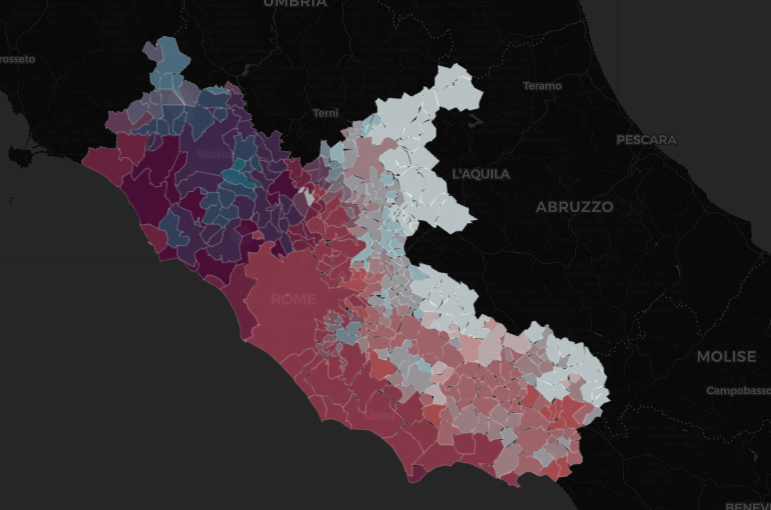
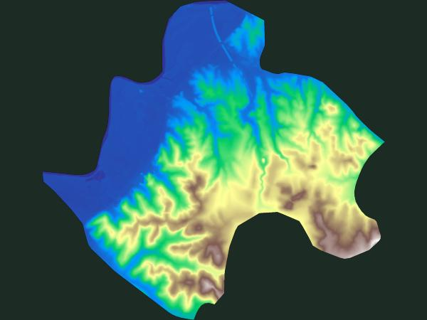

42.0505° N, 12.6187° E — Monterotondo, Lazio
Un atlante di mappe civiche costruite da dati aperti: seggi elettorali, confini amministrativi, territorio. Con focus su Monterotondo, per rendere leggibile quello che di solito resta chiuso. Il tutto ispirato dal lavoro dei creatori di PalermoHub

Mappa coropletica regionale che confronta il bilancio idroclimatico di ogni comune, per capire dove il territorio è più sotto pressione.

9 layer derivati dal Modello Digitale del Terreno a 5 metri: pendenze, esposizione, geomorfologia, stabilità dei versanti, costruibilità e radiazione solare.
Prossima pubblicazione: sovrapposizione tra strumento urbanistico vigente e uso reale del suolo.
Lazio Hub raccoglie rielaborazioni di dati pubblici e open data sul territorio laziale, con un'attenzione particolare al comune di Monterotondo. Ogni mappa è una pagina indipendente, costruita in QGIS ed esportata per il web.
Il progetto è ispirato nella struttura a PalermoHub di OpenDataSicilia.it, rilasciato con licenza CC BY-SA 4.0. Nessun dato di PalermoHub è riutilizzato qui: solo l'approccio.